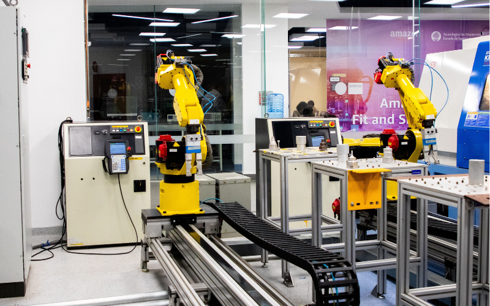

機器視覺正在成為製造業導入 AI 最成功的第一站。相較於許多還停留在試點階段的工業 AI 專案，視覺系統已經實際在產線上檢測產品、降低報廢、提升可追溯性。
這股動能反映在市場規模上：AI 視覺檢測市場在 2025 年已達到相當可觀的規模，並以每年逾 20% 的速度成長，其中「瑕疵檢測與品質控制」是最大宗的應用。
本文整理三個正在重塑機器視覺的關鍵技術方向：Edge AI、3D 視覺，以及深度學習 OCR。
一、Edge AI：把運算搬到產線邊緣
過去 AI 推論多半仰賴伺服器或雲端，資料來回傳輸會帶來延遲。Edge AI 的做法是把運算能力直接放進相機或產線端的裝置，讓瑕疵判定在毫秒之內就地完成，不必先上雲。
對製造現場來說，這帶來幾個實質好處：
- 即時性：在高速產線上，每漏檢一個微小比例的瑕疵都可能演變成召回；邊緣推論能跟上產線節拍逐件檢測。
- 資料主權與穩定性：影像不必外傳，降低頻寬壓力與資安顧慮，即使網路不穩也能運作。
- 閉環控制：機器視覺正從「過/不過」的被動守門員，轉向主動參與製程調整——用即時資料回饋上游，在瑕疵發生前就先修正。

在受控的工業環境中，現代 AI 視覺系統的瑕疵檢測準確率已可達到 98% 以上，明顯優於傳統規則式視覺與人工目檢。
二、3D 視覺：從平面走向立體量測
傳統 2D 視覺看得到「有沒有、對不對」，但看不出「高低、深淺、形狀」。3D 視覺補上了這個維度，對表面缺陷、尺寸量測、機器人取放與定位特別有價值。
目前主流的 3D 感測有三條路線：
- 結構光：投射已知光紋、由變形反推立體形狀，解析度高，特別適合偵測表面瑕疵。
- 立體視覺：用雙相機模擬人眼視差計算深度。
- 飛時測距（ToF）：量測光線往返時間換算距離。
值得注意的兩個趨勢：一是 3D 視覺已從過去複雜的客製系統，演進為出廠即校正、可直接輸出點雲或深度圖的整合式感測器，能跟上產線速度；二是除了用硬體「直接感測」深度，也興起用一般 2D 相機搭配神經網路來「推論」立體結構的做法。
市場面同樣熱絡：多家研究機構預估 3D 機器視覺市場將在未來數年以雙位數年複合成長率擴張，動能來自 AI 瑕疵檢測、邊緣智慧視覺與機器人導引的整合需求。
三、深度學習 OCR：從辨字到讀懂文件
OCR（光學字元辨識）近年因為深度學習而大幅進化。傳統 OCR 面對字體變化、書寫風格差異與品質不佳的影像時容易出錯。
新一代做法有兩個明顯方向：
- 視覺語言模型（VLM）驅動的 OCR：把文件解析、文字偵測、資訊擷取甚至翻譯，整合進單一端到端模型，不只是「認出字」，還能對文件做檢索、語意搜尋與問答。
- 輕量化與效率：研究也在解決 Transformer 運算量偏高的問題，例如以解耦式語言模型的架構，在維持準確率的同時大幅降低運算需求，讓 OCR 更容易部署到資源有限的邊緣裝置。
對製造業而言，這代表產品序號、標籤、批號、規格銘牌的辨識會更穩、更快，也更能應付現場常見的髒污、反光與變形字元。
三大趨勢的交會點
Edge AI、3D 視覺與深度學習 OCR 並不是各走各的，它們正在彼此融合：
未來的視覺系統會在產線邊緣即時運算、以 3D 掌握立體資訊、用深度學習模型同時完成瑕疵判定與字元辨識，並把結果回饋到製程控制，形成一套會自我優化的品質系統。
炘智科技的觀點
這些技術聽起來很前沿，但落地的關鍵始終一樣：貼合你的實際製程。同樣是瑕疵檢測，半導體、PCB 與精密組裝需要的相機、光源、演算法與整合方式都不同。
炘智科技的專長，正是把這些技術轉化成適合客戶產線的客製化方案——從需求評估、演算法開發到與 PLC／MES 的整合。如果你想了解 Edge AI、3D 視覺或 OCR 能為你的產線帶來什麼，歡迎與我們聯絡。
本文部分技術趨勢與市場數據整理自公開產業報導與研究文獻。